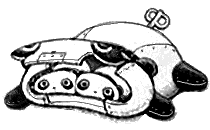

Estou muito feliz de estar escrevendo aqui novamente, não é atoa essa felicidade, pois hoje foi um dia muito
conturbado e engraçado. Tive a impressão de que o caos dos meus ultimos dias tem feito eu sentir vontade de escrever mais.
Vou começar falando sobre o meu primeiro contrato,
explicitamente declarado na minha carteira de trabalho "TECNICO DE TI".
Estou desempenhando funções de manutenção em alguns sistemas da empresa, sendo um deles escrito em php puro kkkkk,
inicialmente recebi uma tarefa de correção de um form nesse programa, que nao estava autenicando usuario e senha,
o foda é q eu levei só uma semana na configuração do ambiente kkkk.
Nao to brincando, o lance foi que as tabelas no banco de dados nao estavam devidamente configuradas
para me conceder algumas permissões, fazendo com que o dashboard do software ficasse incompleto.
Basicamente eu levei mais tempo entendendo um projeto inteiro do que executando minha tarefa, mas
no fim eu consegui entregar a solução.
Tive que pedir orientação diversas vezes para meu supervisor.
Isso me deixou um pouco inseguro no inicio,
mas preferi encarar aqueles problemas q eu nao entendia da melhor forma q eu encontrei,
e acho que no fim deu tudo certo, ou não. Estou esperando meu codigo ser revisado, e to bem ansioso.
Escrevi isso num sabado a tarde, to com sede pra caralho agora e to pensando em buscar uma água,
cheguei em casa e misteriosamente tinha um monte de vermes no chao, por todos os cantos,
foi uma merda ter q limpar tudo, a sorte é q eu tinha a pessoa mais incrivel do meu lado,
me ajudando a sugar os bichos com o aspirador de pó,
se n fosse ela nada disso seria possivel, te amo Aurea.